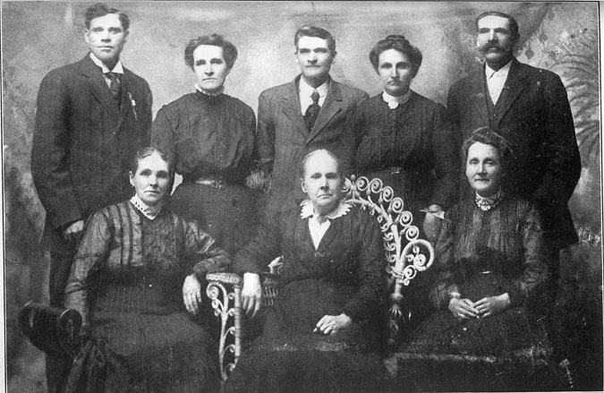

Lorenzo Wesley Roundy Families Information and Photos
Home
Histories
Charts
Photos
Maps
Restricted
News
Info
Contact
| <--(return)-- |   | Shadrach Roundy and Betsy Quimby | ----> |  1 1 2 2 3 3 Lorenzo Wesley Roundy, Adeline Whiting  , Susannah Wallace and Prisella Parrish , Susannah Wallace and Prisella Parrish |
3) Lorenzo Wesley, born June 18, 1819 in Spafford. Lorenzo married Adeline (Adaline) Whiting (1822-1845) on May 1, 1843, in Nauvoo. After the death of Adeline, Lorenzo married Susannah Wallace (1820-1892) May 16, 1847, in Nauvoo, according to his bio-sketch in the appendix of The Roundy Family in America. (The author has marginal doubts that he was married in Nauvoo in May of 1847.) On April 22, 1857, in Salt Lake City, Lorenzo took as a plural wife Priscilla Parrish (1833-1914). Lorenzo was the father of 18 children. Lorenzo drowned in the Colorado River in 1876. Depending on which written source one reads, his death by drowning occurred on May 24,1876, May 25, 1876, May 27, 1876, May 28, 1876, or September 24, 1876. The authors great grandmother, Matilda Ann Roundy, was the daughter of Lorenzo and Susannah. Lorenzo, according to LDS records, was baptized in 1837. According to the Early Church Information File Lorenzo was ordained a Seventy 8 April 1854 by Lewis Robbins and served in the 2nd Quorum of the Seventy, yet other LDS records claim he became a High Priest in May of 1845. When he was endowed in the Nauvoo temple on 22 January 1846 he was listed as a Seventy. Lorenzo received his Patriarchal blessing from Patriarch John Smith on 30 December 1845 in Nauvoo, his lineage "House of Joseph". Lorenzo was an early Pioneer of Southwestern Utah. Called as one of a group of missionaries to labor in the Southern Utah Native American Mission in October of 1853, Lorenzo became an able leader much depended upon by Brigham Young. Lorenzo was the founder of "Upper Kanab", helped build the first sawmill in Washington County, and was a leader during periodic troubles with the Indians. Lorenzo helped investigate the circumstances of the Mountain Meadow massacre. He was called to serve as a member and leader of exploration trips into northern Arizona. Lorenzo hosted Brigham Young while on his annual visits to Southwest Utah, helped locate and buildup several settlements and was a bishop at Kanarraville. According to a brief sketch Jared Curtis' wife, Elizabeth J. D. Roundy, provided George Knapp Collins for his Spafford, Onondaga County New York, Lorenzo was "a member of the (Utah) Nauvoo Legion....He was superintendent of the Co-operative Mercantile Institution in Kanarra, Iron County, Utah, was two or three time elected to the Legislature, was ordained Bishop in 1860, and was finally made President of the Southern Colony of Mormons".

Susannah Wallace Roundy, 2nd wife of Lorenzo Wesley Roundy

Priscella Parrish Roundy, 3rd wife of Lorenzo Wesley Roundy, Seated in Center, with children:
(Standing, l. to r.) Heber Lorenzo, Annie Isadore (Mrs. Henry W. Davis), Samuel H., Lydia Annis (Mrs. Josiah F. Reeves), Joel Jesse; (Seated, left) Fannie Jane (Mrs. John H. Willis; (Seated, right) Sarah (Mrs. James T. Berry